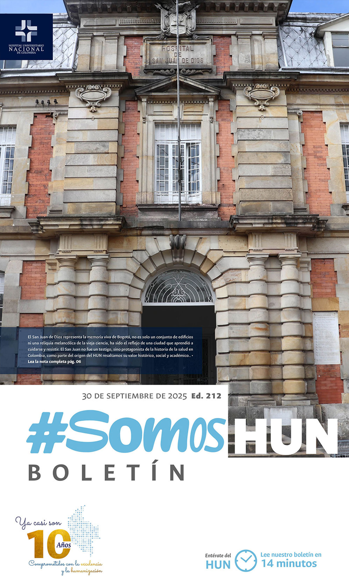
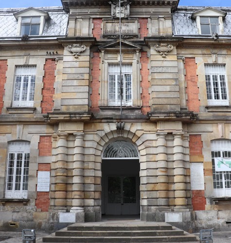
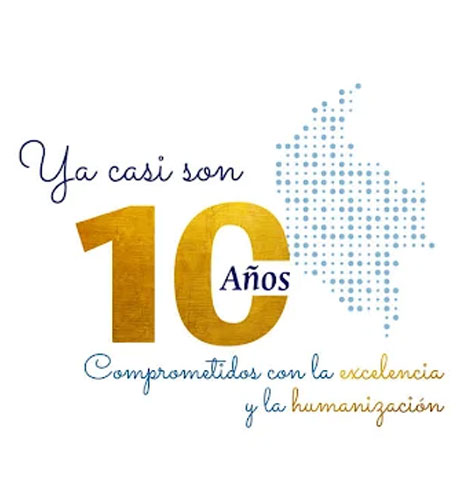
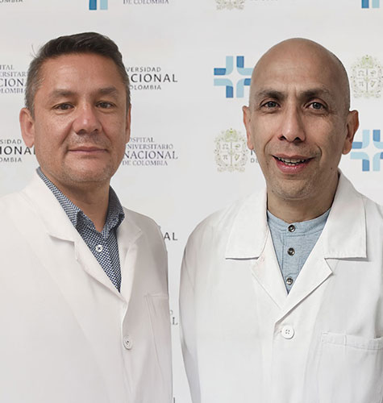
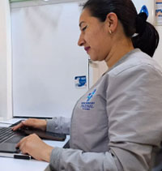
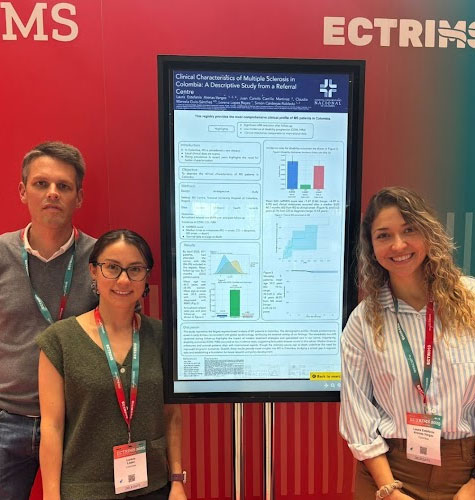
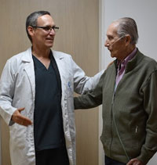

Ver todos los boletines
El sueño de un hospital propio: la historia del HUN contada por sus actores - Capítulo 1 y 2
Las sirenas de las ambulancias del Hospital San Juan de Dios dejaron de escucharse a finales de los años noventa. El emblemático hospital, corazón de la salud pública y de la formación médica en Colombia, había pasado de recibir entre 80 y 120 pacientes diarios en urgencias, a atender apenas una decena. Sus 400 camas ocupadas se redujeron a 50, y lo que antes era un centro de referencia nacional se convirtió en una institución sin director, acumulando deudas que superaban los 68 mil millones de pesos. Como lo retrata el TIEMPO .Leer más

Diez años cuidando la vida, diez años construyendo futuro
El Hospital Universitario Nacional de Colombia cumple una década de servicio, aprendizaje y transformación. Diez años que no solo marcan el calendario, sino que representan el esfuerzo conjunto de estudiantes, docentes, profesionales de la salud y pacientes que han hecho posible consolidar este sueño colectivo.Leer más

Hoy se publicó el ECBE: Evaluación de la condición física y prescripción de actividad física en el paciente con enfermedades reumáticas en el Hospital Universitario Nacional de Colombia.
La actividad física y el ejercicio hacen parte fundamental del tratamiento integral de las enfermedades reumáticas, siendo una de las intervenciones en conformar el grupo del tratamiento no farmacológico; los principales cambios que genera la actividad física como intervención son la mejoría de la capacidad funcional, la mejoría en la fatiga, en la percepción del dolor y de manera general en la calidad de vida; existen diferentes efectos dados para cada una de las condiciones, con mayor cantidad de evidencia en las principales artritis reumatoide y osteoartritis.Leer más

Miryam Johana Ortiz: el compromiso con la calidad que inspira al HUN
En la Unidad de Cuidados Intensivos del Hospital Universitario Nacional de Colombia, el trabajo silencioso y constante de Miryam Johana Ortiz Cárdenas, auxiliar de enfermería, se ha convertido en un ejemplo de compromiso y pasión por la excelencia. Su participación en el proceso de acreditación en salud fue reconocida recientemente con un premio especial: un viaje a Cartagena.Leer más

HUN en el Mundo
El equipo del Centro de Referencia para el tratamiento de la Esclerosis Múltiple de nuestro hospital está presente en ECTRIMS 2025, el más grande evento académico colaborativo para promover la investigación orientada a calidad de vida y las opciones de tratamiento para la Esclerosis Múltiple.Leer más

Un saludo que refleja quiénes somos
En el Hospital Universitario Nacional de Colombia sabemos que la calidad no solo se mide en procedimientos clínicos, sino también en la forma en que nos relacionamos con nuestros pacientes y sus familias. Por eso, se ha diseñado el Protocolo de Saludo HUN (CM-PT-01), un lineamiento institucional que busca garantizar un trato cálido, respetuoso y humanizado en cada encuentro.Leer más